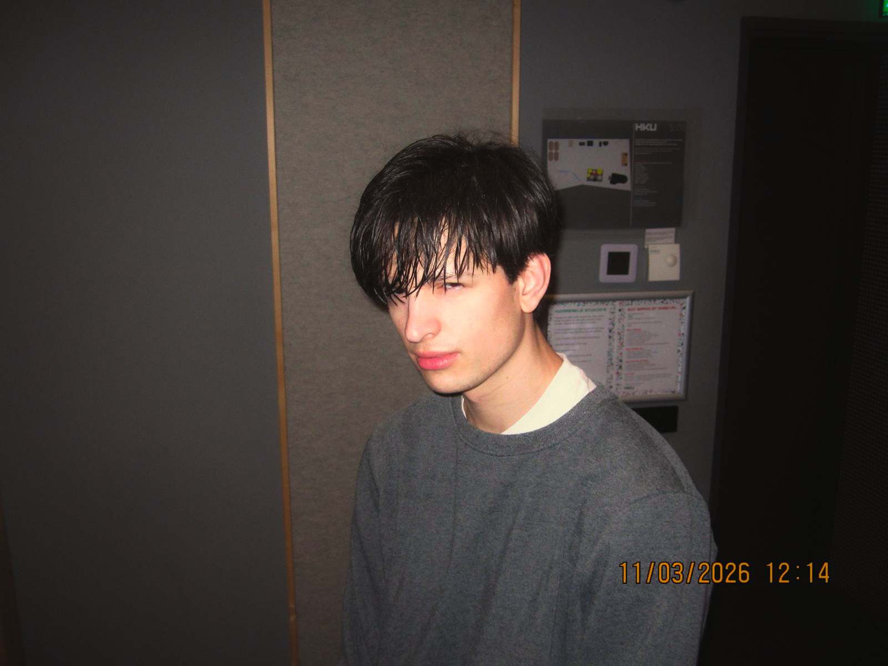

Songwriter | Producer

Werk — bekijk alles
Work In Progress
Een paar producties waar ik nog mee bezig ben.
Songs
Volledig uitgewerkte nummers met vocalen.
Schoolopdrachten
Hier een paar interessante resultaten van mijn schoolopdrachten.
Elektronische Muziek
Elektronische muziek die ik heb gemaakt.
Beats
Nog wat beats als bonusmateriaal.
Over
Hoi, ik ben Ilja. Ik ben een student Muziek en Technologie aan de HKU. Momenteel zit ik in het 2e jaar, en het is mijn droom om songwriter en producer te worden.
Contact